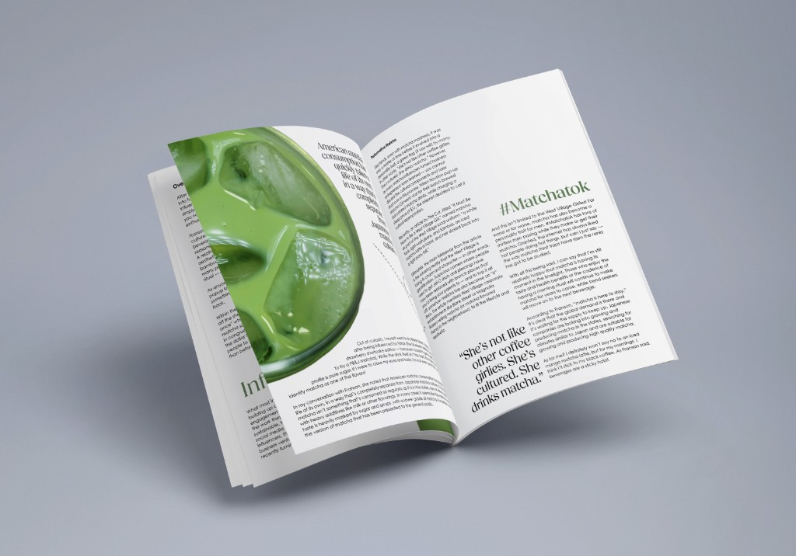
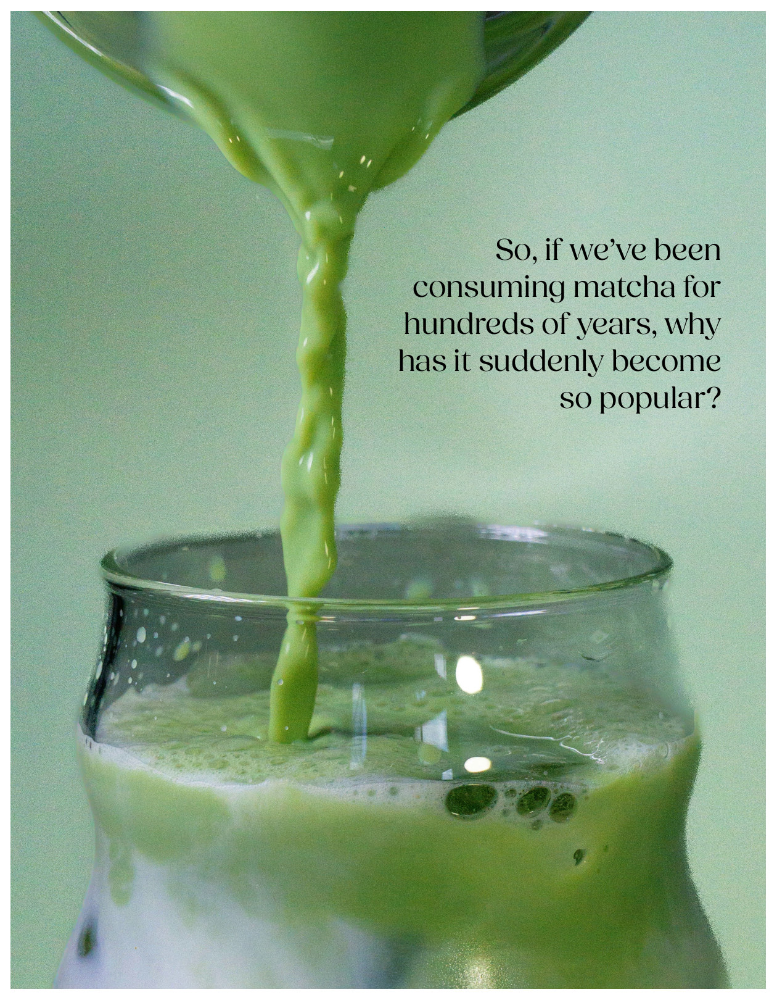
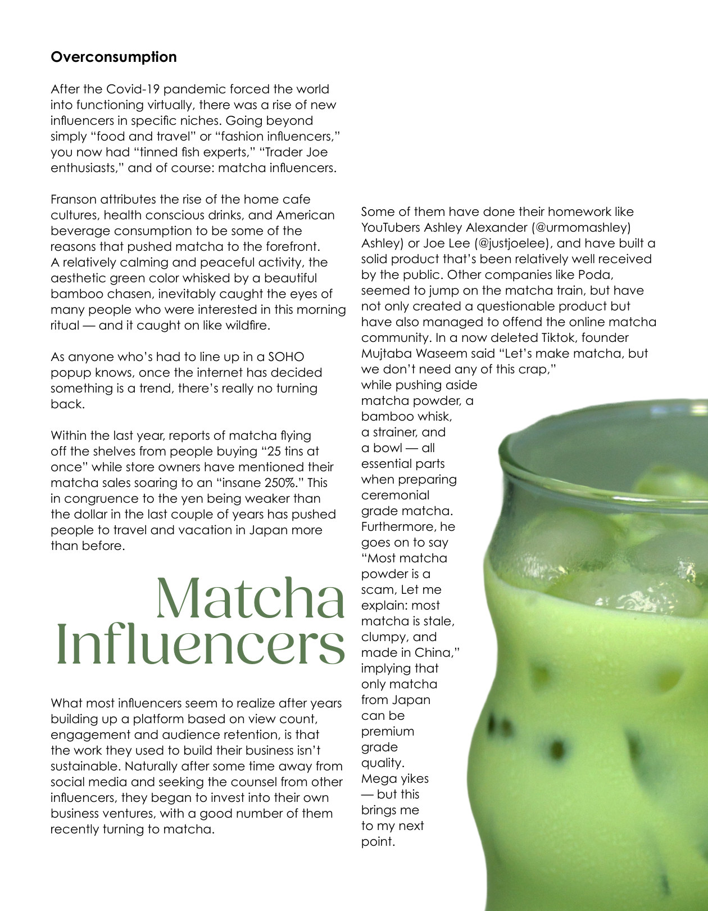
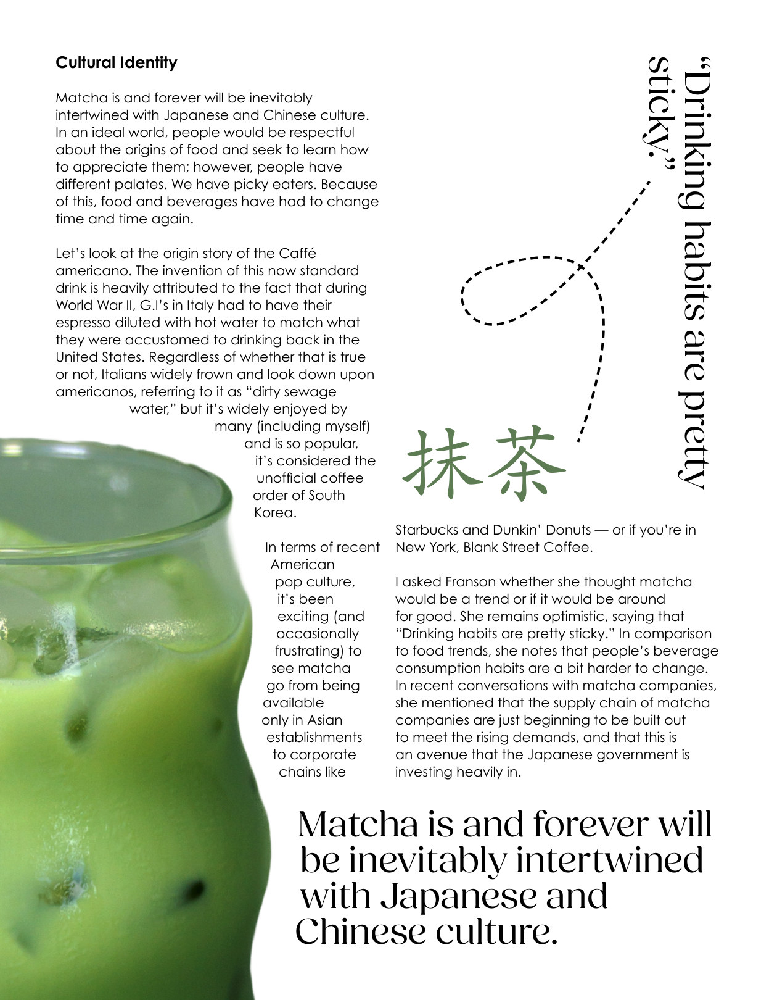
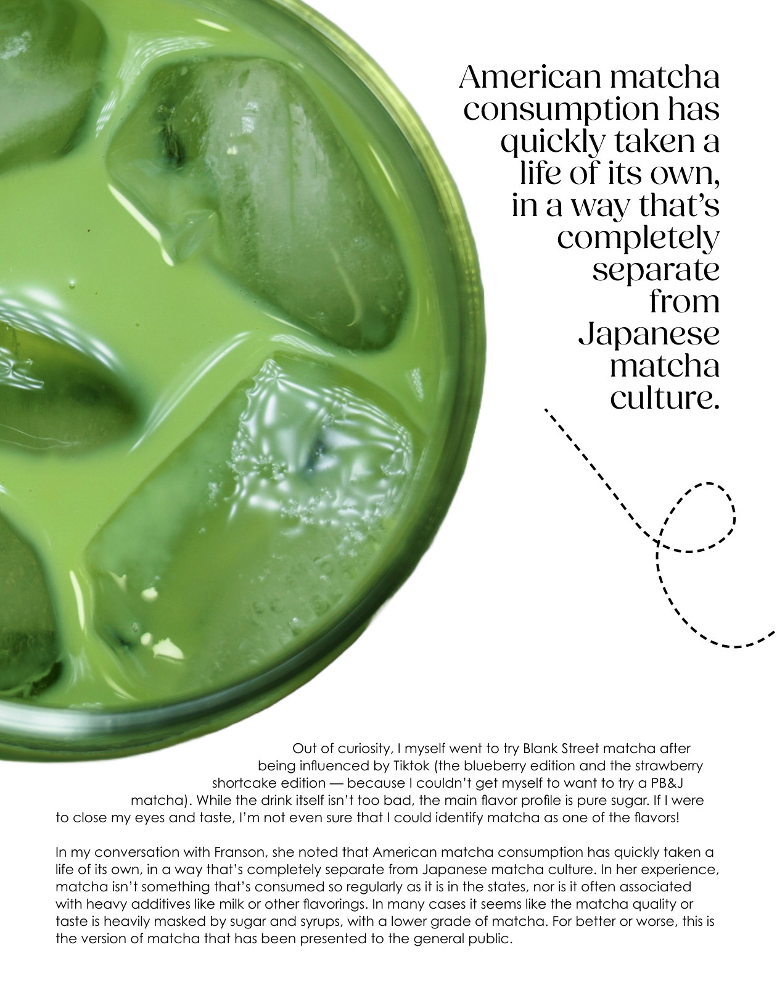
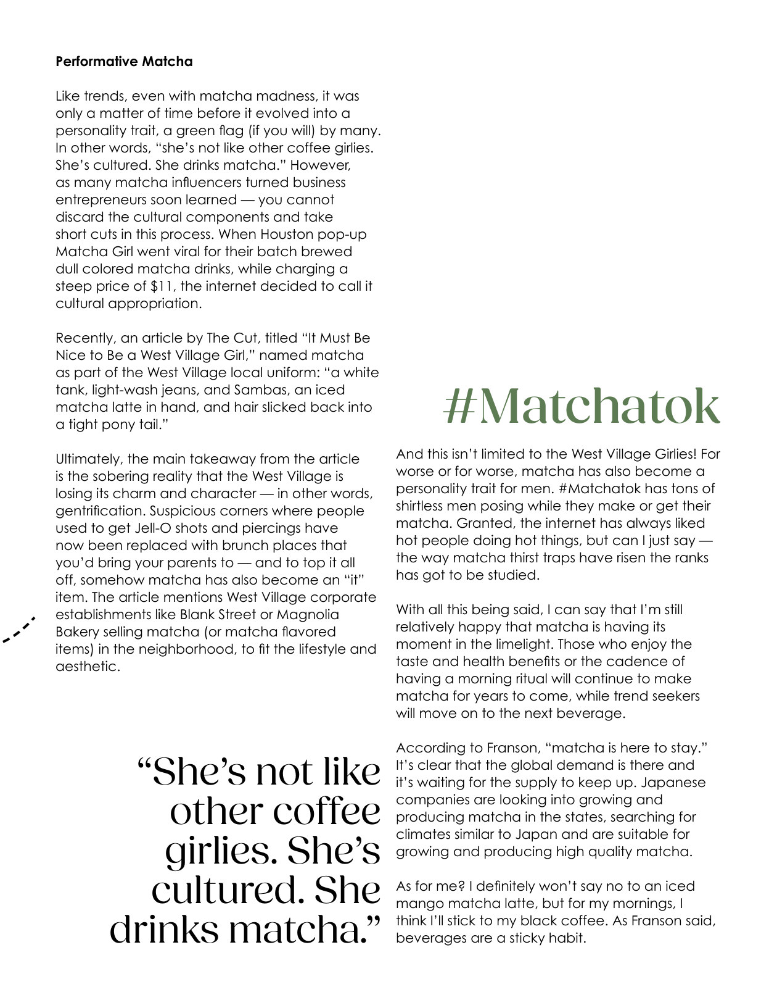
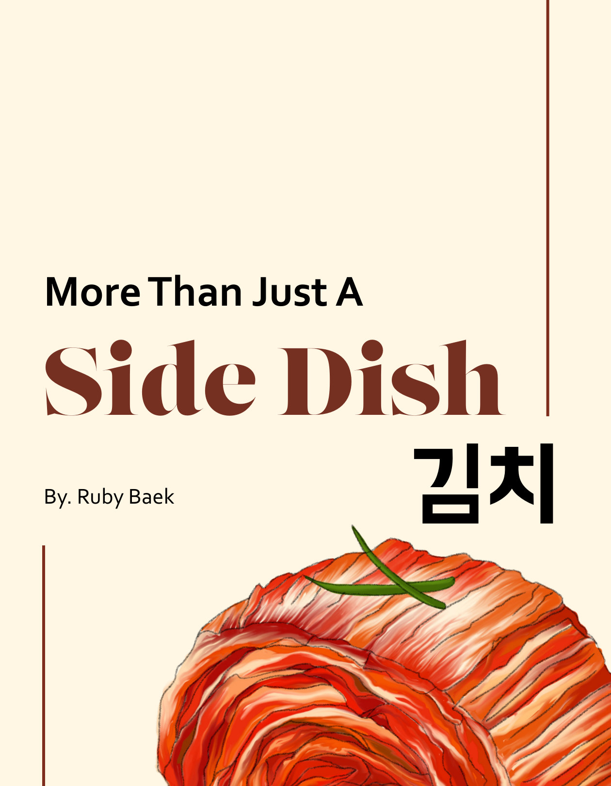
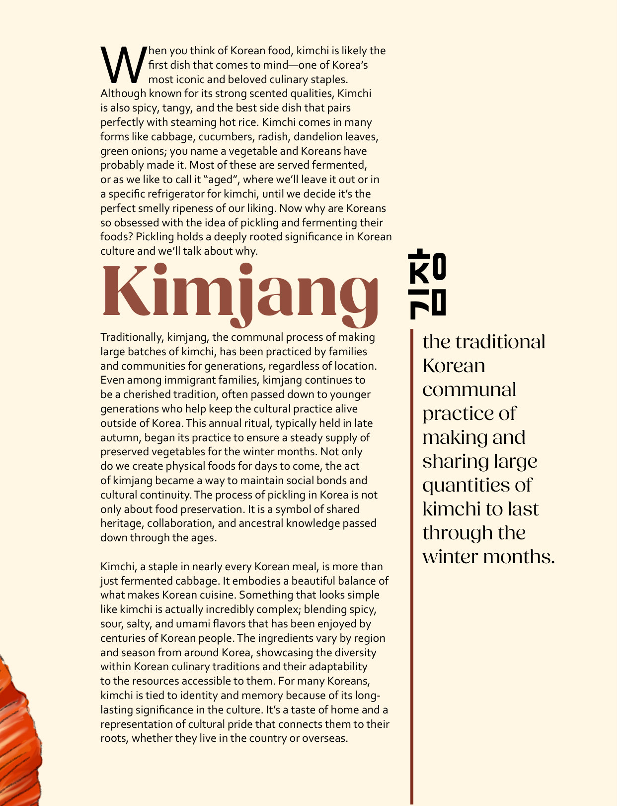
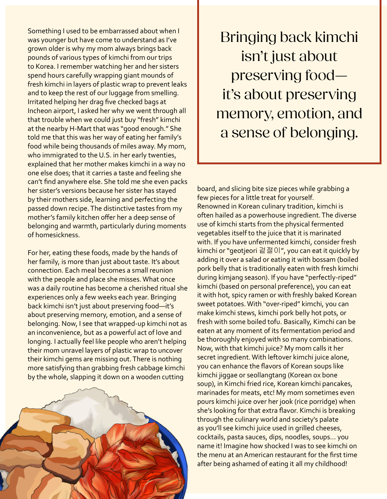
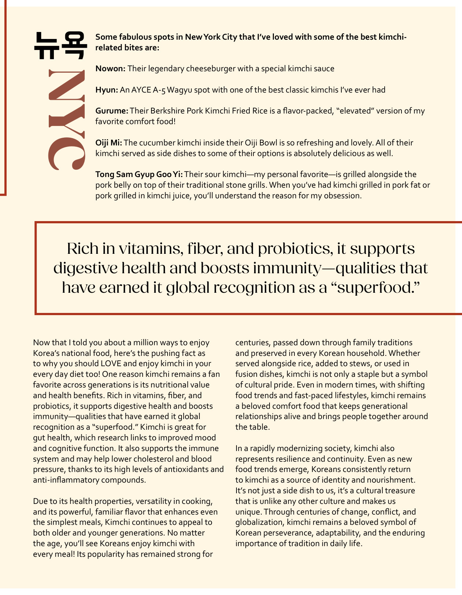

NABI MAGAZINE (2025)

Editorial Design | Fall Internship
Tools: Adobe Photoshop, Adobe InDesign, Adobe Illustrator
During my fall internship with NABI magazine, I created two articles about Matcha and Kimchi. Using illustrations and typography I was able to achieve a style that NABI magazine wanted.
Overview
Matcha Article
Matcha has been starting become a really big trend since 2025. This article informs people the history of Matcha which is Japan and China. Also, criticizing that people’s using Japanese and Chinese culture as a trend. This huge trend led to a severe shortage of Matcha and talking about a lot of Matcha related items.
Using the photos and prompt that NABI magazine provided, I used Adobe InDesign to create an editorial design. I used Adobe Photoshop to make the image look better and blend better with the minimal concept that I was going for.
Kimchi Article
This article introduces readers about Kimchi. It delivers history of Kimchi. Korean’s culinarily culture and how Kimchi is made. This article also talks about how beneficial Kimchi is. There are some NYC restaurants recommendations since this magazine is based on NYC.
With the illustrations I got from NABI, I tried to match the overall magazine page vibe that goes along with the illustrations. Since, Kimchi is Korean culture, I added some Korean words that are related to Kimchi. Also pulled out some of the quotes from the article to make the magazine page feel more full and fun.
Matcha Article





Kimchi Article




Key takeaways
This was my first time trying Adobe InDesign and also editorial design at the same time. Initially it was really challenging to figure out how to make the page feel full and interesting for the readers. However, with the grid system and using typography I was able to achieve it.
Another challenge was for Kimchi article especially there were limited illustrations which made it really hard for me to make the page more diverse. However, using point color (red) and different typefaces I was able to execute the magazine page that makes article readable.
I also learned that pulling out quotes, even though it is still in the article can be really helpful for article to me more diverse. Overall it was a really good experience for me to understand Adobe InDesign and editorial design in general.